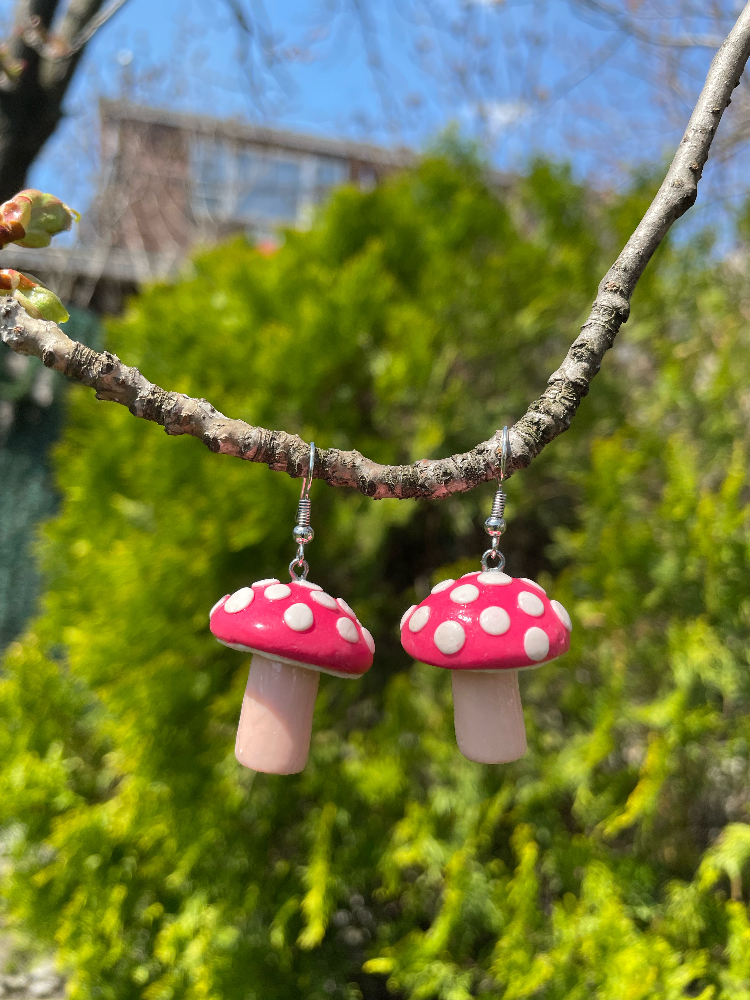
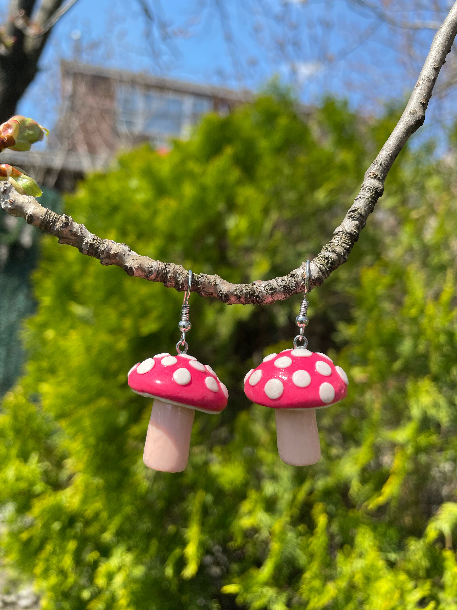

I started playing around with polymer clay during my senior year of high school, around Christmastime. Of course, it started with a Pinterest post. I’d seen polymer clay posts before this point, but my initial inspiration was a post of candy cane earrings. It was the perfect start; not only did it not seem too difficult, it only used two colors of clay (red and white), and it was seasonally appropriate. I made a Walmart trip a few days later, and that night, I had my own candy cane earrings! My next project was crescent moon earrings, followed by carrot earrings (those especially were a hit with my friends).
 

From there, I was unstoppable. For the rest of senior year, all I did in my free time (and sometimes in my not-so-free time as well) was make earrings. Much of my project inspiration came from Pinterest, but I also experimented with marbling colors and adding texture to the clay. I learned technique by playing around based on what I saw in my inspiration pictures. I spent a lot of time at my desk last summer; it’s not really possible to make charms or earrings like these on the go. Not only are there a lot of small parts, but there is a lot of detail-oriented work that is best done on a flat surface. I loved it, though; the work that I put into each piece pays off tenfold when I see and wear the final product.